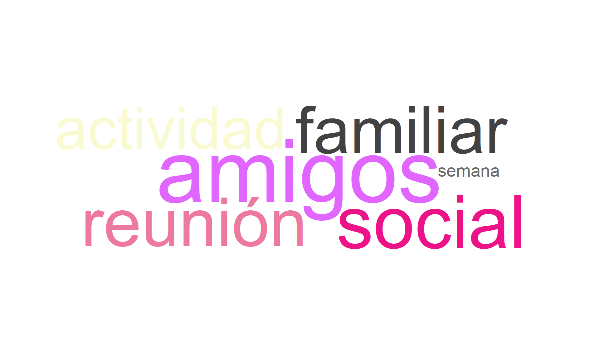
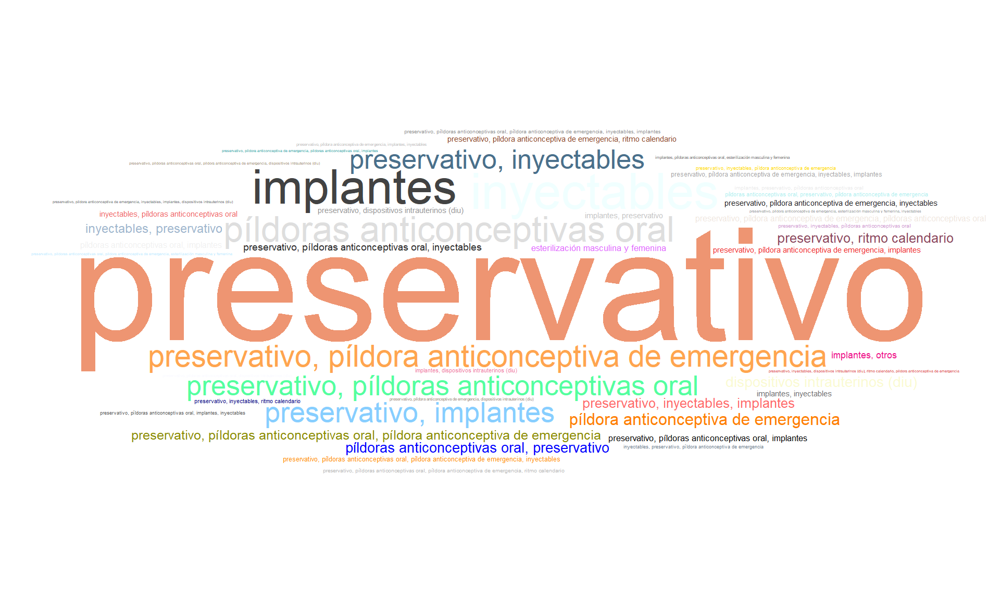

[1] 1195 1556 Sección 3. Salud integral
Aclaración importante
En los gráficos y filtros, el nombre Cúcuta aparecerá como Cucuta.
6.1 Sesión. Salud integral
6.2 Alimentación
6.2.1 ¿Cuántas veces come al día?
Descripción para todos los campus
La mayoría de los estudiantes (78.1%) reportan consumir alimentos entre 3 y 5 veces al día. Un 17.7% lo hace solo entre 1 y 2 veces al día, y un porcentaje reducido (4.1%) lo hace más de 5 veces al día. Esto indica una frecuencia alimentaria adecuada en la mayoría, aunque hay un grupo que podría estar en riesgo nutricional por baja frecuencia.
6.2.2 ¿Cuántas veces por semana consumen los siguientes alimentos en su hogar? (carne, pollo, pavo, res, cordero, cerdo, conejo, pescado o huevos, etc)
Descripción para todos los campus
El consumo de proteína animal entre los estudiantes muestra que el 30.4% la consume todos los días, seguido muy de cerca por un 30% que lo hace casi todos los días, lo que indica que alrededor de 6 de cada 10 estudiantes mantienen un consumo constante.
En un nivel intermedio, el 22.3% la consume entre 3 y 5 veces por semana, mientras que un 15.9% presenta una frecuencia más baja (1 a 2 veces por semana); mientras que solo un 1.4% manifiesta no consumirla o hacerlo rara vez.
6.2.3 ¿Cuántas veces por semana consumen los siguientes alimentos en su hogar? Cereales (avena, granola), frutos secos (almendras, maní) o legumbres (fríjoles, garbanzos, lentejas)
Descripción para todos los campus
El 33.9% de los estudiantes consume proteína vegetal entre 1 a 2 veces por semana. Un 23.7% lo hace entre 3 y 5 veces por semana, mientras que el 21% casi todos los días y el 12% todos los días. Un 9.7% reporta no consumirla o hacerlo rara vez. Aunque hay consumo frecuente en una parte del grupo, destaca la necesidad de promover una mayor ingesta regular de proteína vegetal.
6.3 Actividad laboral de los padres y trabajo del estudiante
6.3.1 Señale aquella labor que sea más similar al trabajo que realizó su padre durante la mayor parte del último año.
Descripción para todos los campus
La ocupación del padre presenta una distribución diversa, aunque con predominio de algunas categorías específicas. La más frecuente corresponde al trabajo profesional (por ejemplo, médico, abogado o ingeniero) con aproximadamente 17%. Le siguen quienes son dueños de un negocio mediano con empleados, con cerca de 10%, y quienes tienen un negocio pequeño o desempeñan oficios como tendero o papelería, también alrededor de 10%.
Entre las demás categorías se observan proporciones importantes de estudiantes que no saben la ocupación del padre (9%) o para quienes no aplica (8%). También se destacan los operarios de máquinas o conductores (8%) y los pensionados (7%). Las ocupaciones restantes, como trabajo por cuenta propia, actividades agropecuarias, labores auxiliares, ventas, empleo público, trabajo en el hogar y oficios de limpieza o construcción, presentan participaciones menores, en general inferiores al 6%.
6.3.2 Señale aquella labor que sea más similar al trabajo que realizó su madre durante la mayor parte del último año.
Descripción para todos los campus
La ocupación de la madre se concentra principalmente en el trabajo en el hogar o sin actividad laboral formal, con cerca del 30%. Le sigue el grupo de madres vinculadas a pequeños negocios o actividades comerciales (como tiendas o papelerías), con aproximadamente 20%.
También se observan proporciones relevantes en quienes no saben o no aplica la información (alrededor del 15%), así como en ocupaciones como ventas o atención al público (cerca del 10%).
El resto de las actividades, como trabajos administrativos, cargos directivos, oficios de limpieza, construcción o labores agropecuarias, presentan participaciones menores, generalmente por debajo del 8%.
6.3.3 ¿Cuáles de los siguientes bienes hay en su hogar?
Descripción para todos los campus
En esta nube de palabras destacan términos como “horno”, “nevera”, “lavadora”, “máquina”, “ropa”, y “gas”, lo cual indica que estos elementos son comunes en los hogares de los encuestados. También se identifican bienes de valor como “automóvil”, “moto”, y artículos de entretenimiento como “consola”, “xbox”, “nintendo” y “playstation”, aunque con menor frecuencia. Esto sugiere una diversidad en la disponibilidad de bienes, desde necesidades básicas hasta elementos de ocio.
6.3.4 ¿Cuántas horas remuneradas trabajó usted la semana pasada?
Descripción para todos los campus
El 43.8% de los estudiantes no realiza trabajo remunerado, mientras que el 30.8% respondió “no aplica”. Un porcentaje menor (10%) trabaja menos de 10 horas y el el 6.5% más de 30 horas semanales. Esto indica que la mayoría no realiza actividades laborales, lo cual puede estar relacionado con dedicación exclusiva a estudios o falta de oportunidades laborales.
6.3.5 ¿Usted recibe algún tipo de remuneración por trabajar?
Descripción para todos los campus
El 73.4% de los estudiantes no recibe remuneración laboral, mientras que el 24.9% reporta recibir pago en efectivo. Las formas menos frecuentes corresponden a la remuneración en efectivo y especie (0.9%) y solo en especie (0.8%).
6.3.6 Con respecto al año pasado, la situación económica de su hogar es:
Descripción para todos los campus
El 59.8% de los estudiantes considera que su situación económica no ha cambiado respecto al año anterior. Un 36.4% percibe una mejoría, y solo el 3.7% considera que ha empeorado. Esto indica estabilidad económica en la mayoría de los hogares y un panorama positivo general.
6.4 Sustanacias psicoactivas
6.4.1 ¿Consume algún tipo de sustancia psicoactiva?
Descripción para todos los campus
El 99.8% de los estudiantes reporta no haber consumido sustancias psicoactivas, lo cual es un hallazgo positivo en términos de salud pública. Solo un 0.2% reconoce consumo, lo cual representa una proporción marginal dentro de la muestra.
6.4.2 ¿Cuál fue la edad de inicio de consumo de sustancias psicoactivas?
Descripción para todos los campus
De los estudiantes (n=2) que reportan consumo de sustancias psicoactivas el 50% iniciaron entre los 14 y 16 años, mientras que el otro 50% comenzó entre los 17 y 19 años. Estos datos indican que el inicio del consumo suele darse en la adolescencia media, lo cual es un periodo de mayor vulnerabilidad y riesgo conductual.
6.4.3 ¿Qué tipo de sustancia psicoactiva consume?
Descripción para todos los campus
Entre los estudiantes que consumen sustancias psicoactivas, el 100% reporta el uso de cannabis.
6.4.4 ¿Ha recibido orientación o ayuda profesional o especializada para superar la situación del consumo de sustancias psicoactivas y mitigar los riesgos y daños asociados al mismo?
Descripción para todos los campus
Los estudiantes que consumen sustancias psicoactivas refieren que han recibido orientación o ayuda profesional para superar la situación del consumo.
6.4.5 Tipo de ayuda recibido para superar el consumo de sustancias psicoactivas
Descripción para todos los campus
El tipo de ayuda recibida para superar el consumo de sustancias psicoactivas muestra que el 50% de los estudiantes no ha recibido ningún tipo de apoyo. Entre quienes sí han accedido a algún tipo de atención, el 25% reporta acompañamiento psicológico y terapéutico, mientras que otro 25% ha recibido apoyo combinado de psicología y psiquiatría.
6.5 Consumo de Cigarrillo: Hábitos y Motivaciones
6.5.1 ¿Usted fuma cigarrillo?
Descripción para todos los campus
El 99.5% de los estudiantes indica que no fuma cigarrillo, y solo el 0.5% afirma que sí lo hace. Esto sugiere que el hábito de fumar cigarrillo es poco frecuente entre los estudiantes de recien ingreso.
6.5.2 Edad en la que empezó a fumar
Descripción para todos los campus
Entre quienes fuman, las edades más comunes de inicio son los 18, 19 y 32 años. Esta información señala que el inicio del consumo de tabaco también ocurre típicamente en la adolescencia temprana o media.
6.5.3 ¿Cuál fue el motivo por el cual probó por primera vez el cigarrillo?
Descripción para todos los campus
El motivo más frecuente por el que los estudiantes probaron cigarrillos fue la curiosidad o iniciativa propia (66.7%) y por sentimientos de tristeza o aburrimiento lo hizo el 16.7%. Esto sugiere que el entorno emocional y la búsqueda de nuevas experiencias juegan un papel importante en el inicio del consumo.
6.5.4 ¿Cuántos cigarrillos fuma diariamente?
Descripción para todos los campus
Todos los estudiantes que indicaron fumar consumen entre 1 y 2 cigarrillos al día. Este patrón sugiere un consumo de baja intensidad entre quienes fuman actualmente.
6.6 Hábitos con el alcohol
6.6.1 ¿Usted consume alcohol normalmente?
Descripción para todos los campus
La mayoría de los estudiantes encuestados manifestó no consumir alcohol, representando el 94.8% del total. Solo el 5.2% reportó que sí lo hace. Esto indica que el consumo de alcohol es poco frecuente dentro de la muestra evaluada.
6.6.2 Edad de inicio del consumo de alcohol por primera vez
Descripción para todos los campus
El inicio del consumo de alcohol se concentra principalmente en la adolescencia. La edad más frecuente es 17 años (24.5%), seguida por 18 años (21%) y 16 años (19.5%). En menor proporción aparecen los 15 años (13%) y 14 años (11.2%). Los demás casos corresponden a edades más dispersas, con participaciones inferiores al 3%.
6.6.3 ¿Cuál fue el motivo por el cual probó por primera vez el alcohol?
Descripción para todos los campus
El 83.9% de los estudiantes que han probado alcohol indicaron que lo hicieron por curiosidad o iniciativa propia. Un 14.5% mencionó otras razones y solo un 1.6% lo hizo por imitación de conductas familiares. Esto sugiere que la decisión fue principalmente individual, más que influenciada por el entorno familiar.
6.6.4 ¿Cuántas veces a la semana ingiere alcohol?
Descripción para todos los campus
Entre quienes consumen alcohol, el 95.2% lo hace solo los fines de semana, mientras que el 3.2% lo hace entre dos y tres veces al día. El patrón de consumo es ocasional y concentrado en los fines de semana.
6.6.5 Ocasiones en las cuales consume alcohol
Descripción para todos los campus
La nube de palabras evidencia que el consumo de alcohol se asocia principalmente con “amigos”, “reunión” y “social”, términos que aparecen con mayor tamaño y frecuencia. También se destacan expresiones como “familiar” y “actividad”, lo que indica que este comportamiento ocurre en contextos compartidos y de interacción grupal.

6.7 Vida sexual
6.7.1 A qué edad inició su vida sexual
Descripción para todos los campus
El 45.5% de los estudiantes no ha iniciado su vida sexual, mientras que el 39.2% reporta haberla iniciado entre los 14 y 17 años. Por su parte, el 13.3% lo hizo entre los 18 y 21 años. Los casos de inicio antes de los 13 años (1.17%) y a partir de los 22 años (0.75%) son mínimos.
6.7.2 ¿Ha utilizado alguna vez métodos anticonceptivos?
Descripción para todos los campus
El 77.7% de los estudiantes encuestados indicó utilizar métodos anticonceptivos, frente al 22.3% que no los usa. Esto sugiere un nivel alto de conciencia sobre la protección en las relaciones sexuales entre la población estudiantil.
6.7.3 Metódos anticonpcetivos usados
Descripción para todos los campus
La nube de palabras muestra que el método anticonceptivo predominante es el preservativo, el cual destaca ampliamente sobre las demás opciones. En segundo nivel aparecen alternativas como las píldoras anticonceptivas orales, los inyectables y los implantes, lo que indica diversidad en el uso de métodos, aunque con menor frecuencia. También se mencionan métodos de emergencia, lo que sugiere su uso ocasional. En conjunto, la información evidencia una clara preferencia por el preservativo como principal mecanismo de protección.

6.7.4 ¿De acuerdo con la definición de identidad de género, usted como se identifica?
Descripción para todos los campus
La distribución de identidad de género muestra que el 45.8% de los estudiantes se identifica como mujer cisgénero y el 40.5% como hombre cisgénero, mientras que el 13.6% prefirió no responder.
6.7.5 ¿Cuál es su orientación sexual?
Descripción para todos los campus
La orientación sexual predominante es la heterosexual (92%), seguida por la bisexual (3.6%) y la homosexual (1.9%). Otras orientaciones como la pansexual (1%), asexual (0.5%) y otras (0.6%) presentan participaciones marginales.
6.8 Aspectos religiosos
6.8.1 ¿Con cuál religión o creencia religiosa se identifica actualmente?
Note
A nivel religioso es predominante la católica (≈60%), seguida por el grupo de cristianos no católicos (17.5%). En menor proporción se encuentran quienes prefieren no responder (6.4%) y quienes no tienen religión (5.8%). Las demás categorías presentan participaciones inferiores al 4%, lo que evidencia una clara concentración en tradiciones cristianas.
6.9 Estado de salud
6.9.1 ¿Padece de alguna enfermedad diagnosticada que requiere tratamiento actualmente?
Descripción para todos los campus
El 6.6% de los estudiantes reportó tener alguna enfermedad diagnosticada, mientras que el restante indicó no tener enfermedades.
6.9.2 Indique si toma medicamentos como tratamiento de la enfermedad diagnosticada
Descripción para todos los campus
El 89% de los estudiantes no está tomando medicamentos, mientras que el 11% sí reporta consumo.
6.10 Discapacidad
6.10.1 Tiene alguna discapacidad
Descripción para todos los campus
El 9.6% de los encuestados reportó tener algún tipo de discapacidad, mientras que el 90.4% indicó no tener ninguna. Este valor refleja la presencia de personas con discapacidad en el entorno universitario y puede orientar estrategias de inclusión y accesibilidad.
6.10.2 ¿Qué tipo de discapacidad posee?
Descripción para todos los campus
El tipo de discapacidad más reportado es la visual baja visión irreversible (47%), seguida por la visual ceguera (13%). También se registran la psicosocial (12.2%) y la física (11.3%). En menor proporción aparecen la auditiva (7%) y la intelectual (6.1%), mientras que otras condiciones presentan valores inferiores al 1%.